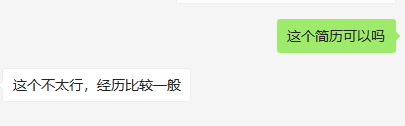
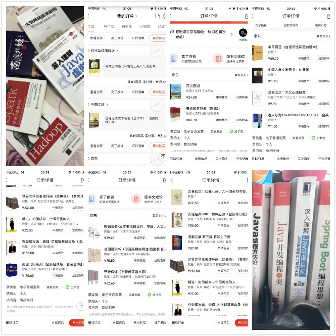

本人性格已经很外向了，也是一个相对乐观派，可是依然陷入深深的焦虑中。
说实话，在此次公司业务变动裁员（传送门）之前，从来没有想过情况会发展到这一步，一直以来都知道开发界有隐形的年龄歧视，从来没有想过这种问题会发生在自己身上，也许是工作的前10年一直都太顺利了，安逸的生活让自己产生了错觉。虽然在找工作的第一天就拿到了offer，可是与此而来的担忧反而更加严重了，躺在床上就在想，如果在35岁再经历一次这种情况，自身的竞争力在哪里？又凭什么认为自己不会遇到这种情况？一旦无法确定，那么就会深陷焦虑。当然，所有人都会说，解决这个问题要努力提升自己。我也知道。可是如何做？如何实现？如果再次碰到了，该怎么办？

上述的这个，是和朋友讨论这个问题的时候，他发给我的一份截图。他告诉我的是，大多数企业把年龄限制在了33岁，我已经31了，如何突破这个关卡？
关于如何破局，最近有几个感悟，说出来和大家一起讨论一下，无关对错。
技术圈子的门槛说高也高，也低也低，其实个人感觉创造副业是相对容易的，比如承接私活，再比如线上授课/视频/文字教学，这些都是我们可以在业余时间做的。本人不玩游戏，不刷抖音，不看快手，只是偶尔看个电影，在尽量多的培养自己的业余爱好，以追求更广的人脉。可是这个毕竟时间较短，只有短短半年的时间，以前从来没有认真认真认真的思考过这个问题。
当然，上述所有的实现都是基于自身的高标准要求，严格的自律能力，自认为在最近1年已经做的很好了，可是现实还是给与了我迎头一棒。所以在考虑了N久之后，认为可提升的点还是有太多太多了。
最终还是决定从自己最熟悉的技术方面来入手，因为近1年接触了太多的技术大佬，让我深深的意识到了和他们的差距，以及对于危机意识的严重缺失，所以决定给自己下一个死命令，真的害怕在下一次大浪中，让自己和家人处于深深的忧虑以及不安和灾难之中。
各种公众号，微商，快手微商（这个如果在微信朋友圈，容易被拉黑，慎用自己的主号。）
其实路有千万种，适合自己的才是最好的，真的无需将自己框定在自己的枷锁中。
自从来了北京之后，阅读和学习我就从来没有放下过，即便自己特别不愿意或者多么想偷懒，都在逼着自己学习，人生如逆水行舟，不进则退。

但是这个真的需要下很大功夫，尤其是特别心仪的部门，需要特别极致的要求，那么你要怎么努力做到？来自2014年IDC数据，开发人员大概是200W左右，因为各种培训+这几年最新毕业的从业人员，算上300W开发人员，
那么要从300W中脱颖而出0.00x% ,自己需要下多大功夫？说实话，想要进自己心仪的部门真的真的要下死苦。
人总会有一个蛰伏期的阶段，这个阶段是打定坚实基础的一个过程，没有捷径。
春秋战国，在即位之初，权臣专断。楚庄王在位日浅，力量孤单，弄不好就有被废掉的危险。于是，他只好收敛锋芒。装着弱不禁风，沉湎于酒色，三年不理国政。伍举实在看不下去了，用寓言讽刺楚王说：“有鸟停于高阜，三年不鸣，这种鸟是什么鸟？！”楚庄王回答说：“此鸟三年不飞，一飞冲天；三年不鸣，一鸣惊人！”听到这话后，伍举才知道楚庄王不过蛰伏罢了。
任何事物，在成长的时期都需要蛰伏一段时间。蛰伏一段时间之后，一旦到了惊蛰阶段，也就到了可以大干一场了。这一阶段的长短早晚，完全取决于个人。
“伏久者，飞必高”。
其实这个是最简单的，也是最难的。
我见过太多的人技术能力很不错，但是不太会说话，或者不太敢说话，造成自己的困局：干的多拿的少？替别人背锅？我在给团队培训的时候一直share给大家的是，我们不甩锅，我们也不背锅。可是很多时候，我们有理的事，就是因为不会说话，最后反而变成了没理的。网上还有一个段子：我们总是在吵架完了之后就后悔自己没有发挥好，如果再重新吵一次会怎么怎么样。
但是在职场中，吵架真的是最LOW的方式了，因为吵架代表着我们无法解决问题，只剩下了歇斯底里。当然，每一个人都有自己的底线，不是尽量，而是要求自己坚决不要去触碰别人的底线（测试或者产品经理特别是你的直属上级），这个是红线。
我说说我的沟通方式（一定是解决问题为出发点，我在职场很少针对人如何，但是有例外）：
工作这么些年，特别是最近几年，我从来没有让领导做过问答题，从来都是选择题。因为从心底里认知，就是让你来是解决问题的，不是提/制造问题的。
千万不要和人胡说八道，做不到的一定不要承诺，承诺的一定不要放鸽子。
我来衣二三之后，第一件事给团队培训的就是沟通，给大家讲2个小笑话：
啪的一摔纸和本，说cao，这啥破需求。我擦，然后我说滚。就再没理，几天之后就消失了。想要告诉大家什么呢，团队中别人愿不愿意帮你，其实都是个人的沟通，说白了就是你的为人处世造成的。意识到了并且强加约束，很好，你提升会特别明显特别快。意识不到或者不愿意改。。。呵呵。
从上周五到本周二，本人面试通过率>80%, 很大程度上是和沟通顺畅分不开的。
如果做不到怎么办？
我其实在团队和生活中都是特别反感这样的人，还没有开始做，就说自己做不到！
为什么要留给自己做不到的这个后路，如果做不到，就意味着整个家庭会陷入一个巨大的痛苦之中，你还会给自己找完不成的借口吗？
其实大多数的事情，当你开始之后，就会发现没有想法中的那么困难，大部分困难都是自己给自己造成的心理暗示和负担！
在我写完这篇文章之后，目标明确了，心情舒畅了，外面的天更蓝了。
Ps.
无论这篇文章因为何种原因让您不舒服不高兴了，很抱歉给您带来的困扰，请直接关闭即可，并请相信我不是有意的。